연출 등급표 적용 — 전후 비교
원칙: 연출 예산은 전직 차수가 정하고, ★ 는 그 안에서 채운다. 기준표 docs/specs/skill-vfx.md "연출 등급표".
| 장치 | 1차 | 2차 | 3차·융합 | 궁극기 |
|---|
| 이름 글자 | 작은 떠오르는 글자만 (★★★ 도) | ★★★ 만 이름 띠 | ★★ 부터 이름 띠 | 레터박스 + 큰 컷인 (그대로) |
| 금빛 · 마무리 섬광 | 없음 (★★★ 잔상만 흰빛) | ★★★ | ★★★ (그대로) | 그대로 |
| 오라 | ★ 크기 불꽃 테두리까지, 발밑 룬·금빛 고리 없음 | ★★ 룬 고리 · ★★★ 금빛 고리 | 그대로 | 그대로 |
| 막타 정지·흔들림 (★★ 기준값) | ≤0.1 · ≤0.3 (상한으로 막음) | 그대로 |
띠: 시전 직후부터 0.14초 간격 8장, 기사 기준 320px. 측정값은 화면에 실제로 걸린 값 (게임 정지 = 기준값 × 숙련 세기 × 1.3, 흔들림 = 기준값 × 숙련 세기 — ★★★ 세기 1.2). 잔타의 연출 정지는 세지 않았다.
첫 장에 이름 글자가 두 줄로 보이는 것은 캡처 직전 시뮬레이터가 한 번 더 쓴 시전의 글자다 (게임과 무관).
검사 계열 — 1차 강철 베기 vs 2차 질풍난무
전 정지 0.281초 · 흔들림 0.66 · 이름 띠 있음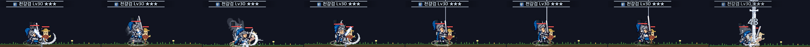
후 정지 0.156초 · 흔들림 0.36 · 이름 띠 없음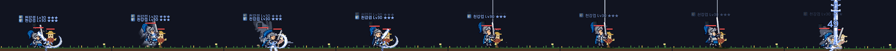
전 정지 0.096초 · 흔들림 0.35 · 이름 띠 없음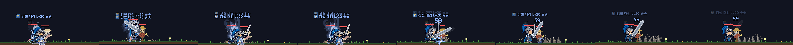
후 정지 0.096초 · 흔들림 0.30 · 이름 띠 없음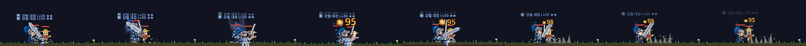
전 정지 0.000초 · 흔들림 0.08 · 이름 띠 있음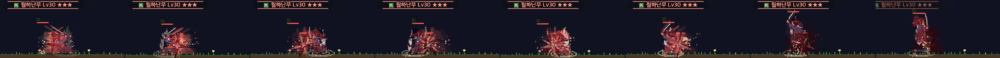
후 정지 0.000초 · 흔들림 0.08 · 이름 띠 있음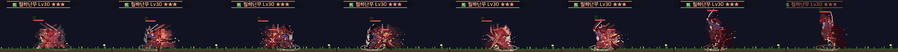
전 정지 0.000초 · 흔들림 0.07 · 이름 띠 있음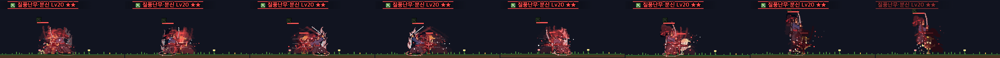
후 정지 0.000초 · 흔들림 0.07 · 이름 띠 없음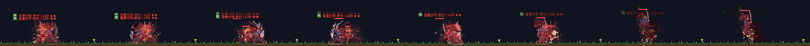
창기사 계열 — 1차 관통 찌르기 vs 2차 용추락
전 정지 0.187초 · 흔들림 0.42 · 이름 띠 있음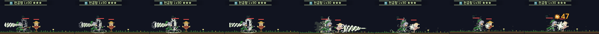
후 정지 0.156초 · 흔들림 0.36 · 이름 띠 없음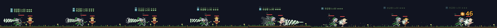
전 정지 0.096초 · 흔들림 0.15 · 이름 띠 없음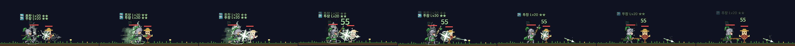
후 정지 0.096초 · 흔들림 0.15 · 이름 띠 없음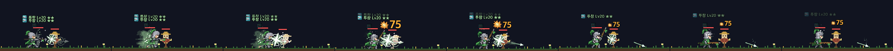
전 정지 0.000초 · 흔들림 0.60 · 이름 띠 있음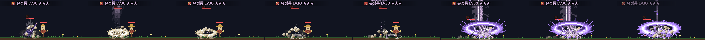
후 정지 0.000초 · 흔들림 0.60 · 이름 띠 있음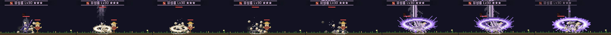
전 정지 0.074초 · 흔들림 0.40 · 이름 띠 있음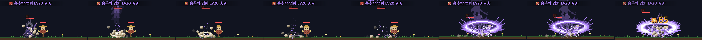
후 정지 0.074초 · 흔들림 0.40 · 이름 띠 없음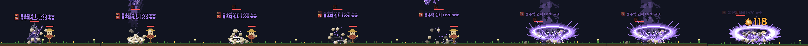
레인저 계열 — 1차 연사 vs 2차 헤드샷
전 정지 0.000초 · 흔들림 0.06 · 이름 띠 있음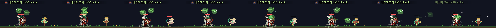
후 정지 0.000초 · 흔들림 0.06 · 이름 띠 없음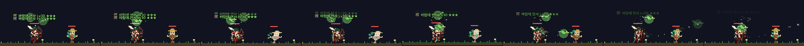
전 정지 0.055초 · 흔들림 0.07 · 이름 띠 없음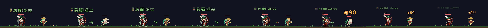
후 정지 0.055초 · 흔들림 0.07 · 이름 띠 없음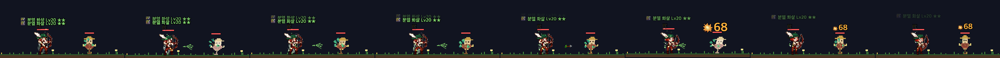
전 정지 0.000초 · 흔들림 0.00 · 이름 띠 있음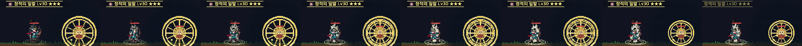
후 정지 0.000초 · 흔들림 0.00 · 이름 띠 있음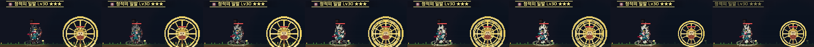
전 정지 0.182초 · 흔들림 0.25 · 이름 띠 있음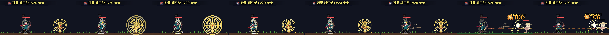
후 정지 0.182초 · 흔들림 0.25 · 이름 띠 없음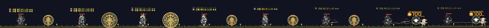
마법사 계열 — 1차 마력 폭발 vs 2차 메테오
전 정지 0.164초 · 흔들림 0.42 · 이름 띠 있음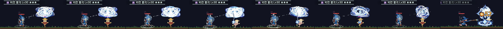
후 정지 0.156초 · 흔들림 0.36 · 이름 띠 없음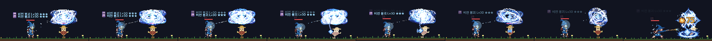
전 정지 0.096초 · 흔들림 0.20 · 이름 띠 없음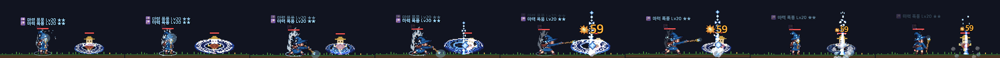
후 정지 0.096초 · 흔들림 0.20 · 이름 띠 없음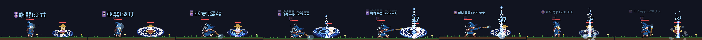
전 정지 0.000초 · 흔들림 0.10 · 이름 띠 있음
후 정지 0.000초 · 흔들림 0.10 · 이름 띠 있음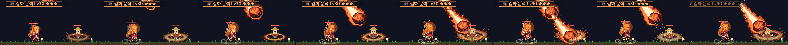
전 정지 0.000초 · 흔들림 0.14 · 이름 띠 있음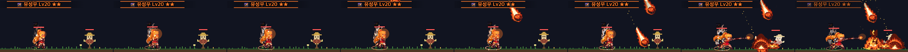
후 정지 0.000초 · 흔들림 0.14 · 이름 띠 없음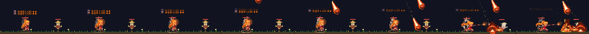
파이터 계열 — 1차 원투 스트레이트 vs 2차 연타 러시
1차 원투 스트레이트 ★★★ ▶ 시뮬레이터
전 정지 0.115초 · 흔들림 0.15 · 이름 띠 있음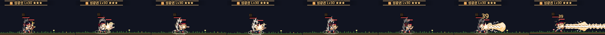
후 정지 0.115초 · 흔들림 0.15 · 이름 띠 없음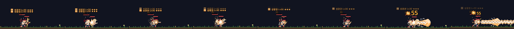
1차 원투 스트레이트 ★★ ▶ 시뮬레이터
전 정지 0.096초 · 흔들림 0.13 · 이름 띠 없음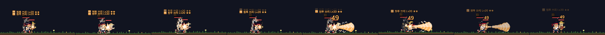
후 정지 0.096초 · 흔들림 0.13 · 이름 띠 없음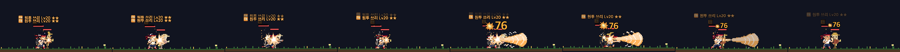
전 정지 0.000초 · 흔들림 0.08 · 이름 띠 있음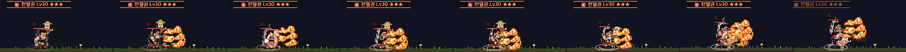
후 정지 0.000초 · 흔들림 0.08 · 이름 띠 있음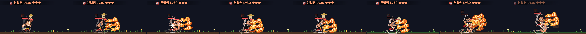
전 정지 0.000초 · 흔들림 0.07 · 이름 띠 있음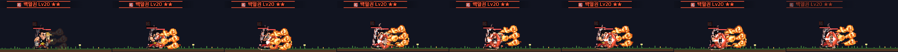
후 정지 0.000초 · 흔들림 0.07 · 이름 띠 없음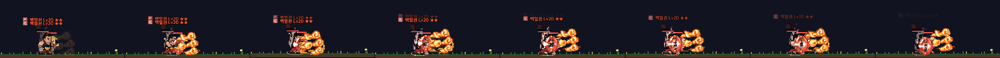
시즌7 융합 (3차 예산) — 검신 질풍 일섬
융합 질풍 일섬 ★★
전 정지 0.000초 · 흔들림 0.07 · 이름 띠 있음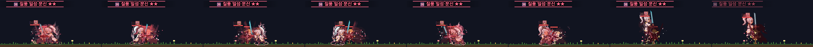
후 정지 0.000초 · 흔들림 0.07 · 이름 띠 있음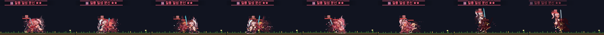